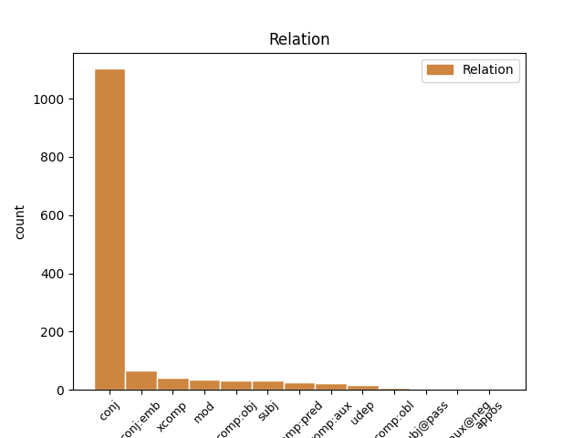
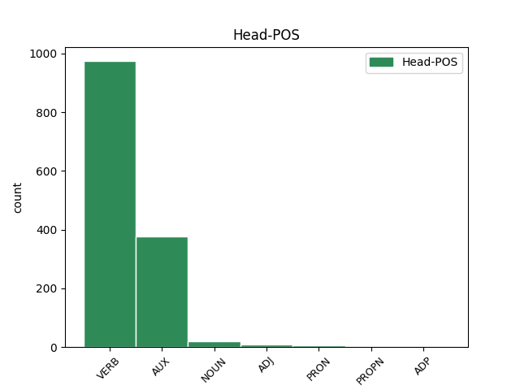
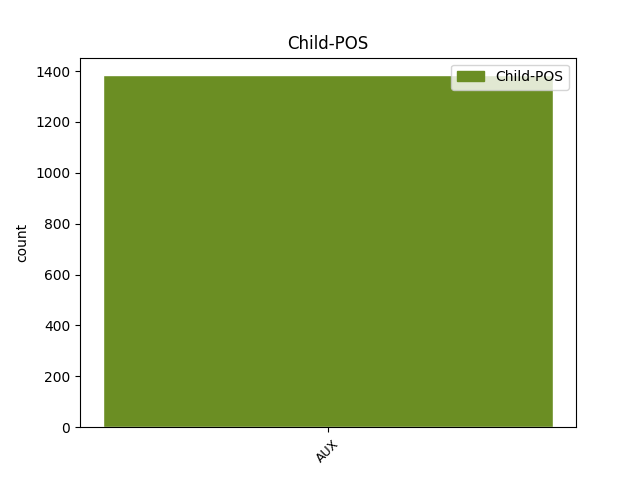

Distribution of features within this leaf



Agreement Rules sorted by frequency.
- When the dependent token is the conjunct(conj) of the head token, and the head token is VERB and the dependent token is AUX.
1 Hann _ _ _ _ 0 _ _ _
2 vísir _ _ _ _ 0 _ _ _
3 á _ _ _ _ 0 _ _ _
4 , _ _ _ _ 0 _ _ _
5 at _ _ _ _ 0 _ _ _
6 tað _ _ _ _ 0 _ _ _
7 altíð _ _ _ _ 0 _ _ _
8 eru verue VERB _ Mood=Ind|Number=Plur|Person=3|Tense=Pres|VerbForm=Fin|Voice=Act 0 _ _ _
9 fráfall _ _ _ _ 0 _ _ _
10 , _ _ _ _ 0 _ _ _
11 og _ _ _ _ 0 _ _ _
12 tí _ _ _ _ 0 _ _ _
13 er vere AUX _ Mood=Ind|Number=Sing|Person=3|Tense=Pres|VerbForm=Fin|Voice=Act 8 conj _ _
14 neyðugt _ _ _ _ 0 _ _ _
15 við _ _ _ _ 0 _ _ _
16 breiðum _ _ _ _ 0 _ _ _
17 grundarlag _ _ _ _ 0 _ _ _
18 . _ _ _ _ 0 _ _ _
1 Menniskjans _ _ _ _ 0 _ _ _
2 vald _ _ _ _ 0 _ _ _
3 er vere AUX _ Mood=Ind|Number=Sing|Person=3|Tense=Pres|VerbForm=Fin|Voice=Act 0 _ _ _
4 avmarkað _ _ _ _ 0 _ _ _
5 til _ _ _ _ 0 _ _ _
6 tíð _ _ _ _ 0 _ _ _
7 og _ _ _ _ 0 _ _ _
8 stað _ _ _ _ 0 _ _ _
9 – _ _ _ _ 0 _ _ _
10 Gud _ _ _ _ 0 _ _ _
11 er vere AUX _ Mood=Ind|Number=Sing|Person=3|Tense=Pres|VerbForm=Fin|Voice=Act 3 conj _ _
12 ikki _ _ _ _ 0 _ _ _
13 avmarkaður _ _ _ _ 0 _ _ _
14 . _ _ _ _ 0 _ _ _
1 Samstundis _ _ _ _ 0 _ _ _
2 sum _ _ _ _ 0 _ _ _
3 ein _ _ _ _ 0 _ _ _
4 dómsnevnd _ _ _ _ 0 _ _ _
5 hevur _ _ _ _ 0 _ _ _
6 sitið _ _ _ _ 0 _ _ _
7 og _ _ _ _ 0 _ _ _
8 arbeitt _ _ _ _ 0 _ _ _
9 við _ _ _ _ 0 _ _ _
10 hesum _ _ _ _ 0 _ _ _
11 , _ _ _ _ 0 _ _ _
12 hava _ _ _ _ 0 _ _ _
13 lesarar _ _ _ _ 0 _ _ _
14 eisini _ _ _ _ 0 _ _ _
15 atkvøtt _ _ _ _ 0 _ _ _
16 fyri _ _ _ _ 0 _ _ _
17 bestu _ _ _ _ 0 _ _ _
18 bókum _ _ _ _ 0 _ _ _
19 , _ _ _ _ 0 _ _ _
20 og _ _ _ _ 0 _ _ _
21 tann _ _ _ _ 0 _ _ _
22 listin _ _ _ _ 0 _ _ _
23 líkist líkian VERB _ Mood=Ind|Number=Sing|Person=3|Tense=Pres|VerbForm=Fin|Voice=Act 0 _ _ _
24 nógv _ _ _ _ 0 _ _ _
25 tí _ _ _ _ 0 _ _ _
26 hjá _ _ _ _ 0 _ _ _
27 dómsnevndini _ _ _ _ 0 _ _ _
28 , _ _ _ _ 0 _ _ _
29 hóast _ _ _ _ 0 _ _ _
30 onkur _ _ _ _ 0 _ _ _
31 frávik _ _ _ _ 0 _ _ _
32 eru erun AUX _ Mood=Ind|Number=Plur|Person=3|Tense=Pres|VerbForm=Fin|Voice=Act 23 conj:emb _ _
33 . _ _ _ _ 0 _ _ _
1 Sum _ _ _ _ 0 _ _ _
2 teir _ _ _ _ 0 _ _ _
3 skrivaðu skrivaðu VERB _ Mood=Ind|Number=Plur|Person=3|Tense=Past|VerbForm=Fin|Voice=Act 0 _ _ _
4 í _ _ _ _ 0 _ _ _
5 gjárskvøldið _ _ _ _ 0 _ _ _
6 á _ _ _ _ 0 _ _ _
7 sínari _ _ _ _ 0 _ _ _
8 Facebook _ _ _ _ 0 _ _ _
9 síðu _ _ _ _ 0 _ _ _
10 var vere AUX _ Mood=Ind|Number=Sing|Person=3|Tense=Past|VerbForm=Fin|Voice=Act 3 xcomp _ _
11 túrurin _ _ _ _ 0 _ _ _
12 um _ _ _ _ 0 _ _ _
13 hav _ _ _ _ 0 _ _ _
14 góður _ _ _ _ 0 _ _ _
15 . _ _ _ _ 0 _ _ _
1 So _ _ _ _ 0 _ _ _
2 einfalt _ _ _ _ 0 _ _ _
3 er vere AUX _ Mood=Ind|Number=Sing|Person=3|Tense=Pres|VerbForm=Fin|Voice=Act 6 comp:obj _ _
4 tað _ _ _ _ 0 _ _ _
5 , _ _ _ _ 0 _ _ _
6 sigur sigur VERB _ Mood=Ind|Number=Sing|Person=3|Tense=Pres|VerbForm=Fin|Voice=Act 0 _ _ _
7 Rúni _ _ _ _ 0 _ _ _
8 . _ _ _ _ 0 _ _ _
1 Eisini _ _ _ _ 0 _ _ _
2 kann kanat VERB _ Mood=Ind|Number=Sing|Person=3|Tense=Pres|VerbForm=Fin|Voice=Act 0 _ _ _
3 staðfestast _ _ _ _ 0 _ _ _
4 at _ _ _ _ 0 _ _ _
5 innanhýsis _ _ _ _ 0 _ _ _
6 liðkappingin _ _ _ _ 0 _ _ _
7 fyri _ _ _ _ 0 _ _ _
8 rútmu _ _ _ _ 0 _ _ _
9 má _ _ _ _ 0 _ _ _
10 býtast _ _ _ _ 0 _ _ _
11 upp _ _ _ _ 0 _ _ _
12 og _ _ _ _ 0 _ _ _
13 eftirhyggjast _ _ _ _ 0 _ _ _
14 , _ _ _ _ 0 _ _ _
15 tí _ _ _ _ 0 _ _ _
16 áskoðararnir _ _ _ _ 0 _ _ _
17 eru erun AUX _ Mood=Ind|Number=Plur|Person=3|Tense=Pres|VerbForm=Fin 2 mod _ _
18 vorðnir _ _ _ _ 0 _ _ _
19 so _ _ _ _ 0 _ _ _
20 nógvir _ _ _ _ 0 _ _ _
21 at _ _ _ _ 0 _ _ _
22 broytingar _ _ _ _ 0 _ _ _
23 mugu _ _ _ _ 0 _ _ _
24 gerast _ _ _ _ 0 _ _ _
25 . _ _ _ _ 0 _ _ _
1 Í _ _ _ _ 0 _ _ _
2 hesum _ _ _ _ 0 _ _ _
3 føri _ _ _ _ 0 _ _ _
4 vóni vóni VERB _ Mood=Ind|Number=Sing|Person=3|Tense=Past|VerbForm=Fin 0 _ _ _
5 eg _ _ _ _ 0 _ _ _
6 ikki _ _ _ _ 0 _ _ _
7 , _ _ _ _ 0 _ _ _
8 tað _ _ _ _ 0 _ _ _
9 er vere AUX _ Mood=Ind|Number=Sing|Person=3|Tense=Pres|VerbForm=Fin 4 subj _ _
10 so _ _ _ _ 0 _ _ _
11 . _ _ _ _ 0 _ _ _
1 Arbeiðsloysið _ _ _ _ 0 _ _ _
2 er _ _ _ _ 0 _ _ _
3 4,5 _ _ _ _ 0 _ _ _
4 prosent _ _ _ _ 0 _ _ _
5 - _ _ _ _ 0 _ _ _
6 tað _ _ _ _ 0 _ _ _
7 minsta _ _ _ _ 0 _ _ _
8 seinastu _ _ _ _ 0 _ _ _
9 trý _ _ _ _ 0 _ _ _
10 árini _ _ _ _ 0 _ _ _
11 Árstíðarjavnaða _ _ _ _ 0 _ _ _
12 talið _ _ _ _ 0 _ _ _
13 av _ _ _ _ 0 _ _ _
14 fulltíðararbeiðsleysum _ _ _ _ 0 _ _ _
15 var vere AUX _ Mood=Ind|Number=Sing|Person=3|Tense=Past|VerbForm=Fin|Voice=Act 0 _ _ _
16 1.200 _ _ _ _ 0 _ _ _
17 í _ _ _ _ 0 _ _ _
18 desember _ _ _ _ 0 _ _ _
19 , _ _ _ _ 0 _ _ _
20 ið _ _ _ _ 0 _ _ _
21 er vere AUX _ Mood=Ind|Number=Sing|Person=3|Tense=Pres|VerbForm=Fin|Voice=Act 15 conj:emb _ _
22 106 _ _ _ _ 0 _ _ _
23 færri _ _ _ _ 0 _ _ _
24 enn _ _ _ _ 0 _ _ _
25 í _ _ _ _ 0 _ _ _
26 november _ _ _ _ 0 _ _ _
27 mánað _ _ _ _ 0 _ _ _
28 . _ _ _ _ 0 _ _ _
1 Eginognin _ _ _ _ 0 _ _ _
2 er vere AUX _ Mood=Ind|Number=Sing|Person=3|Tense=Pres|VerbForm=Fin|Voice=Act 0 _ _ _
3 7,8 _ _ _ _ 0 _ _ _
4 mió.kr _ _ _ _ 0 _ _ _
5 . _ _ _ _ 0 _ _ _
6 Stjóri _ _ _ _ 0 _ _ _
7 í _ _ _ _ 0 _ _ _
8 Sp _ _ _ _ 0 _ _ _
9 / _ _ _ _ 0 _ _ _
10 f _ _ _ _ 0 _ _ _
11 Gunnvá _ _ _ _ 0 _ _ _
12 er vere AUX _ Mood=Ind|Number=Sing|Person=3|Tense=Pres|VerbForm=Fin|Voice=Act 2 comp:pred _ _
13 Jan _ _ _ _ 0 _ _ _
14 Nattestad _ _ _ _ 0 _ _ _
15 Jacobsen _ _ _ _ 0 _ _ _
16 á _ _ _ _ 0 _ _ _
17 Norðskála _ _ _ _ 0 _ _ _
18 , _ _ _ _ 0 _ _ _
19 tað _ _ _ _ 0 _ _ _
20 hevur _ _ _ _ 0 _ _ _
21 hann _ _ _ _ 0 _ _ _
22 verið _ _ _ _ 0 _ _ _
23 øll _ _ _ _ 0 _ _ _
24 árini _ _ _ _ 0 _ _ _
25 síðani _ _ _ _ 0 _ _ _
26 felagið _ _ _ _ 0 _ _ _
27 varð _ _ _ _ 0 _ _ _
28 stovnað _ _ _ _ 0 _ _ _
29 í _ _ _ _ 0 _ _ _
30 apríl _ _ _ _ 0 _ _ _
31 mánað _ _ _ _ 0 _ _ _
32 2004 _ _ _ _ 0 _ _ _
33 . _ _ _ _ 0 _ _ _
1 Løgmaður _ _ _ _ 0 _ _ _
2 sigur sigur NOUN _ Mood=Ind|Number=Sing|Person=3|Tense=Pres|VerbForm=Fin|Voice=Act 0 _ _ _
3 soleiðis _ _ _ _ 0 _ _ _
4 í _ _ _ _ 0 _ _ _
5 skrivi _ _ _ _ 0 _ _ _
6 , _ _ _ _ 0 _ _ _
7 sum _ _ _ _ 0 _ _ _
8 er vere AUX _ Mood=Ind|Number=Sing|Person=3|Tense=Pres|VerbForm=Fin|Voice=Act 2 conj _ _
9 sent _ _ _ _ 0 _ _ _
10 Rættarnevndini _ _ _ _ 0 _ _ _
11 . _ _ _ _ 0 _ _ _
1 Men _ _ _ _ 0 _ _ _
2 skal skulle VERB _ Mood=Ind|Number=Sing|Person=3|Tense=Pres|VerbForm=Fin|Voice=Act 0 _ _ _
3 arbeiðsloysið _ _ _ _ 0 _ _ _
4 tálmast _ _ _ _ 0 _ _ _
5 er vere AUX _ Mood=Ind|Number=Sing|Person=3|Tense=Pres|VerbForm=Fin|Voice=Act 2 comp:aux _ _
6 neyðugt _ _ _ _ 0 _ _ _
7 við _ _ _ _ 0 _ _ _
8 arbeiðsplássum _ _ _ _ 0 _ _ _
9 . _ _ _ _ 0 _ _ _
1 Alt _ _ _ _ 0 _ _ _
2 annað _ _ _ _ 0 _ _ _
3 líka _ _ _ _ 0 _ _ _
4 skuldi _ _ _ _ 0 _ _ _
5 kalda _ _ _ _ 0 _ _ _
6 veðrið _ _ _ _ 0 _ _ _
7 í _ _ _ _ 0 _ _ _
8 2010 _ _ _ _ 0 _ _ _
9 økt _ _ _ _ 0 _ _ _
10 oljunýtsluna _ _ _ _ 0 _ _ _
11 við _ _ _ _ 0 _ _ _
12 15 _ _ _ _ 0 _ _ _
13 % _ _ _ _ 0 _ _ _
14 , _ _ _ _ 0 _ _ _
15 men _ _ _ _ 0 _ _ _
16 økingin _ _ _ _ 0 _ _ _
17 var vere VERB _ Mood=Ind|Number=Sing|Person=3|Tense=Past|VerbForm=Fin|Voice=Act 0 _ _ _
18 helvtina _ _ _ _ 0 _ _ _
19 minni _ _ _ _ 0 _ _ _
20 , _ _ _ _ 0 _ _ _
21 sum _ _ _ _ 0 _ _ _
22 er vere AUX _ Mood=Ind|Number=Sing|Person=3|Tense=Pres|VerbForm=Fin|Voice=Act 17 udep _ _
23 ein _ _ _ _ 0 _ _ _
24 rættiliga _ _ _ _ 0 _ _ _
25 greið _ _ _ _ 0 _ _ _
26 ábending _ _ _ _ 0 _ _ _
27 um _ _ _ _ 0 _ _ _
28 , _ _ _ _ 0 _ _ _
29 at _ _ _ _ 0 _ _ _
30 húsarhaldini _ _ _ _ 0 _ _ _
31 ikki _ _ _ _ 0 _ _ _
32 , _ _ _ _ 0 _ _ _
33 í _ _ _ _ 0 _ _ _
34 eins _ _ _ _ 0 _ _ _
35 stóran _ _ _ _ 0 _ _ _
36 mun _ _ _ _ 0 _ _ _
37 , _ _ _ _ 0 _ _ _
38 brúka _ _ _ _ 0 _ _ _
39 olju _ _ _ _ 0 _ _ _
40 til _ _ _ _ 0 _ _ _
41 upphiting _ _ _ _ 0 _ _ _
42 . _ _ _ _ 0 _ _ _
1 Og _ _ _ _ 0 _ _ _
2 tá _ _ _ _ 0 _ _ _
3 komið _ _ _ _ 0 _ _ _
4 er er VERB _ Mood=Ind|Number=Sing|Person=3|Tense=Pres|VerbForm=Fin 0 _ _ _
5 á _ _ _ _ 0 _ _ _
6 mál _ _ _ _ 0 _ _ _
7 , _ _ _ _ 0 _ _ _
8 er vere AUX _ Mood=Ind|Number=Sing|Person=3|Tense=Pres|VerbForm=Fin 4 comp:pred _ _
9 frukt _ _ _ _ 0 _ _ _
10 og _ _ _ _ 0 _ _ _
11 okkurt _ _ _ _ 0 _ _ _
12 drekkandi _ _ _ _ 0 _ _ _
13 at _ _ _ _ 0 _ _ _
14 fáa _ _ _ _ 0 _ _ _
15 . _ _ _ _ 0 _ _ _
1 Vónandi _ _ _ _ 0 _ _ _
2 vita vitan VERB _ Mood=Ind|Number=Sing|Person=3|Tense=Past|VerbForm=Fin|Voice=Act 0 _ _ _
3 tit _ _ _ _ 0 _ _ _
4 hvat _ _ _ _ 0 _ _ _
5 Team _ _ _ _ 0 _ _ _
6 Fortress _ _ _ _ 0 _ _ _
7 2 _ _ _ _ 0 _ _ _
8 er vere AUX _ Mood=Ind|Number=Sing|Person=3|Tense=Pres|VerbForm=Fin|Voice=Act 2 comp:obl _ _
9 Awesome _ _ _ _ 0 _ _ _
10 Hasin _ _ _ _ 0 _ _ _
11 har _ _ _ _ 0 _ _ _
12 dugir _ _ _ _ 0 _ _ _
13 sera _ _ _ _ 0 _ _ _
14 væl _ _ _ _ 0 _ _ _
15 at _ _ _ _ 0 _ _ _
16 seta _ _ _ _ 0 _ _ _
17 tónleik _ _ _ _ 0 _ _ _
18 ið _ _ _ _ 0 _ _ _
19 hangur _ _ _ _ 0 _ _ _
20 saman _ _ _ _ 0 _ _ _
21 við _ _ _ _ 0 _ _ _
22 filminum _ _ _ _ 0 _ _ _
23 / _ _ _ _ 0 _ _ _
24 video _ _ _ _ 0 _ _ _
25 - _ _ _ _ 0 _ _ _
26 klippinum _ _ _ _ 0 _ _ _
27 Beautiful _ _ _ _ 0 _ _ _
28 Tú _ _ _ _ 0 _ _ _
29 noyðist _ _ _ _ 0 _ _ _
30 at _ _ _ _ 0 _ _ _
31 vera _ _ _ _ 0 _ _ _
32 innritaður _ _ _ _ 0 _ _ _
33 fyri _ _ _ _ 0 _ _ _
34 at _ _ _ _ 0 _ _ _
35 skriva _ _ _ _ 0 _ _ _
36 innihald _ _ _ _ 0 _ _ _
37 . _ _ _ _ 0 _ _ _
1 Ein _ _ _ _ 0 _ _ _
2 persónur _ _ _ _ 0 _ _ _
3 kann können AUX _ Mood=Ind|Number=Sing|Person=3|Tense=Pres|VerbForm=Fin 0 _ _ _
4 kann können AUX _ Mood=Ind|Number=Sing|Person=3|Tense=Pres|VerbForm=Fin 3 comp:aux _ _
5 bert _ _ _ _ 0 _ _ _
6 vera _ _ _ _ 0 _ _ _
7 stillari _ _ _ _ 0 _ _ _
8 á _ _ _ _ 0 _ _ _
9 einum _ _ _ _ 0 _ _ _
10 lista _ _ _ _ 0 _ _ _
11 . _ _ _ _ 0 _ _ _
1 Alt _ _ _ _ 0 _ _ _
2 gott gott ADJ _ Mood=Ind|Number=Sing|Person=3|Tense=Past|VerbForm=Fin|Voice=Act 0 _ _ _
3 um _ _ _ _ 0 _ _ _
4 borgarstjóran _ _ _ _ 0 _ _ _
5 , _ _ _ _ 0 _ _ _
6 men _ _ _ _ 0 _ _ _
7 fyri _ _ _ _ 0 _ _ _
8 okkum _ _ _ _ 0 _ _ _
9 borgara _ _ _ _ 0 _ _ _
10 er vere AUX _ Mood=Ind|Number=Sing|Person=3|Tense=Pres|VerbForm=Fin 2 conj _ _
11 hetta _ _ _ _ 0 _ _ _
12 sera _ _ _ _ 0 _ _ _
13 , _ _ _ _ 0 _ _ _
14 sera _ _ _ _ 0 _ _ _
15 óheppið _ _ _ _ 0 _ _ _
16 . _ _ _ _ 0 _ _ _
1 2 _ _ _ _ 0 _ _ _
2 ) _ _ _ _ 0 _ _ _
3 Útgáva _ _ _ _ 0 _ _ _
4 , _ _ _ _ 0 _ _ _
5 endurnýggjan _ _ _ _ 0 _ _ _
6 og _ _ _ _ 0 _ _ _
7 varðveitsla _ _ _ _ 0 _ _ _
8 av _ _ _ _ 0 _ _ _
9 koyrikorti _ _ _ _ 0 _ _ _
10 hjá _ _ _ _ 0 _ _ _
11 umsøkjara _ _ _ _ 0 _ _ _
12 og _ _ _ _ 0 _ _ _
13 førarum _ _ _ _ 0 _ _ _
14 í _ _ _ _ 0 _ _ _
15 flokki _ _ _ _ 0 _ _ _
16 1 _ _ _ _ 0 _ _ _
17 er vere AUX _ Mood=Ind|Number=Sing|Person=3|Tense=Pres|VerbForm=Fin|Voice=Act 0 _ _ _
18 treytað _ _ _ _ 0 _ _ _
19 av _ _ _ _ 0 _ _ _
20 : _ _ _ _ 0 _ _ _
21 a _ _ _ _ 0 _ _ _
22 ) _ _ _ _ 0 _ _ _
23 Umsøkjarin _ _ _ _ 0 _ _ _
24 ella _ _ _ _ 0 _ _ _
25 førarin _ _ _ _ 0 _ _ _
26 skal skulle AUX _ Mood=Ind|Number=Sing|Person=3|Tense=Pres|VerbForm=Fin|Voice=Act 17 mod _ _
27 , _ _ _ _ 0 _ _ _
28 um _ _ _ _ 0 _ _ _
29 neyðugt _ _ _ _ 0 _ _ _
30 við _ _ _ _ 0 _ _ _
31 rættleiðandi _ _ _ _ 0 _ _ _
32 linsum _ _ _ _ 0 _ _ _
33 , _ _ _ _ 0 _ _ _
34 hava _ _ _ _ 0 _ _ _
35 eina _ _ _ _ 0 _ _ _
36 tvíoygda _ _ _ _ 0 _ _ _
37 sjónstyrki _ _ _ _ 0 _ _ _
38 , _ _ _ _ 0 _ _ _
39 sum _ _ _ _ 0 _ _ _
40 í _ _ _ _ 0 _ _ _
41 minsta _ _ _ _ 0 _ _ _
42 lagi _ _ _ _ 0 _ _ _
43 er _ _ _ _ 0 _ _ _
44 0,5 _ _ _ _ 0 _ _ _
45 á _ _ _ _ 0 _ _ _
46 báðum _ _ _ _ 0 _ _ _
47 eygum _ _ _ _ 0 _ _ _
48 samstundis _ _ _ _ 0 _ _ _
49 . _ _ _ _ 0 _ _ _
1 Osvald _ _ _ _ 0 _ _ _
2 verður _ _ _ _ 0 _ _ _
3 skotin _ _ _ _ 0 _ _ _
4 í _ _ _ _ 0 _ _ _
5 hini _ _ _ _ 0 _ _ _
6 blídligu _ _ _ _ 0 _ _ _
7 Karini _ _ _ _ 0 _ _ _
8 , _ _ _ _ 0 _ _ _
9 ið _ _ _ _ 0 _ _ _
10 er vere AUX _ Mood=Ind|Number=Sing|Person=3|Tense=Pres|VerbForm=Fin|Voice=Act 0 _ _ _
11 nógv _ _ _ _ 0 _ _ _
12 yngri _ _ _ _ 0 _ _ _
13 enn _ _ _ _ 0 _ _ _
14 hann _ _ _ _ 0 _ _ _
15 , _ _ _ _ 0 _ _ _
16 og _ _ _ _ 0 _ _ _
17 kensluborin _ _ _ _ 0 _ _ _
18 sum _ _ _ _ 0 _ _ _
19 hann _ _ _ _ 0 _ _ _
20 er vere AUX _ Mood=Ind|Number=Sing|Person=3|Tense=Pres|VerbForm=Fin|Voice=Act 10 subj _ _
21 , _ _ _ _ 0 _ _ _
22 fyrigyklar _ _ _ _ 0 _ _ _
23 hann _ _ _ _ 0 _ _ _
24 sær _ _ _ _ 0 _ _ _
25 eina _ _ _ _ 0 _ _ _
26 framtíð _ _ _ _ 0 _ _ _
27 saman _ _ _ _ 0 _ _ _
28 við _ _ _ _ 0 _ _ _
29 henni _ _ _ _ 0 _ _ _
30 . _ _ _ _ 0 _ _ _
1 Soleiðis _ _ _ _ 0 _ _ _
2 vil _ _ _ _ 0 _ _ _
3 tað _ _ _ _ 0 _ _ _
4 vera _ _ _ _ 0 _ _ _
5 , _ _ _ _ 0 _ _ _
6 tá _ _ _ _ 0 _ _ _
7 ið _ _ _ _ 0 _ _ _
8 fólkatingsmaðurin _ _ _ _ 0 _ _ _
9 hjá _ _ _ _ 0 _ _ _
10 Javnaðarflokkinum _ _ _ _ 0 _ _ _
11 er vere AUX _ Mood=Ind|Number=Sing|Person=3|Tense=Pres|VerbForm=Fin|Voice=Act 0 _ _ _
12 fullveldismaður _ _ _ _ 0 _ _ _
13 , _ _ _ _ 0 _ _ _
14 meðan _ _ _ _ 0 _ _ _
15 undirritaði _ _ _ _ 0 _ _ _
16 er vere AUX _ Mood=Ind|Number=Sing|Person=3|Tense=Pres|VerbForm=Fin|Voice=Act 11 udep _ _
17 sambands- _ _ _ _ 0 _ _ _
18 og _ _ _ _ 0 _ _ _
19 ríkisfelagsskapsmaður _ _ _ _ 0 _ _ _
20 . _ _ _ _ 0 _ _ _
1 So _ _ _ _ 0 _ _ _
2 fitt _ _ _ _ 0 _ _ _
3 mynd _ _ _ _ 0 _ _ _
4 :-) _ _ _ _ 0 _ _ _
5 Ja _ _ _ _ 0 _ _ _
6 fittur _ _ _ _ 0 _ _ _
7 var vere AUX _ Mood=Ind|Number=Sing|Person=3|Tense=Past|VerbForm=Fin|Voice=Act 0 _ _ _
8 hann _ _ _ _ 0 _ _ _
9 sildi _ _ _ _ 0 _ _ _
10 sæman _ _ _ _ 0 _ _ _
11 við _ _ _ _ 0 _ _ _
12 Demus _ _ _ _ 0 _ _ _
13 Brimsvík _ _ _ _ 0 _ _ _
14 han _ _ _ _ 0 _ _ _
15 var vere AUX _ Mood=Ind|Number=Sing|Person=3|Tense=Past|VerbForm=Fin|Voice=Act 7 xcomp _ _
16 meistari _ _ _ _ 0 _ _ _
17 á _ _ _ _ 0 _ _ _
18 Kirlasteini _ _ _ _ 0 _ _ _
19 í _ _ _ _ 0 _ _ _
20 1957 _ _ _ _ 0 _ _ _
21 Amma _ _ _ _ 0 _ _ _
22 mín _ _ _ _ 0 _ _ _
23 Davína _ _ _ _ 0 _ _ _
24 og _ _ _ _ 0 _ _ _
25 Jeffrey _ _ _ _ 0 _ _ _
26 föðurbróðir _ _ _ _ 0 _ _ _
27 minn _ _ _ _ 0 _ _ _
28 Vest _ _ _ _ 0 _ _ _
29 Afrika _ _ _ _ 0 _ _ _
30 Heimahoyrandi _ _ _ _ 0 _ _ _
31 í _ _ _ _ 0 _ _ _
32 einun _ _ _ _ 0 _ _ _
33 bí _ _ _ _ 0 _ _ _
34 sun _ _ _ _ 0 _ _ _
35 eitur _ _ _ _ 0 _ _ _
36 Conakry _ _ _ _ 0 _ _ _
37 Eitt _ _ _ _ 0 _ _ _
38 fitt _ _ _ _ 0 _ _ _
39 par _ _ _ _ 0 _ _ _
40 , _ _ _ _ 0 _ _ _
41 altíð _ _ _ _ 0 _ _ _
42 so _ _ _ _ 0 _ _ _
43 hugnalig _ _ _ _ 0 _ _ _
44 at _ _ _ _ 0 _ _ _
45 verða _ _ _ _ 0 _ _ _
46 saman _ _ _ _ 0 _ _ _
47 við _ _ _ _ 0 _ _ _
48 . _ _ _ _ 0 _ _ _
1 Poula _ _ _ _ 0 _ _ _
2 Patursson _ _ _ _ 0 _ _ _
3 , _ _ _ _ 0 _ _ _
4 verkætlanarsamskipari _ _ _ _ 0 _ _ _
5 Í _ _ _ _ 0 _ _ _
6 síðstu _ _ _ _ 0 _ _ _
7 viku _ _ _ _ 0 _ _ _
8 var vere AUX _ Mood=Ind|Number=Sing|Person=3|Tense=Past|VerbForm=Fin|Voice=Act 11 subj@pass _ _
9 nýggjur _ _ _ _ 0 _ _ _
10 kunningarskermur _ _ _ _ 0 _ _ _
11 settur settur VERB _ Mood=Ind|Number=Sing|Person=3|Tense=Pres|VerbForm=Fin|Voice=Pass 0 _ _ _
12 til _ _ _ _ 0 _ _ _
13 á _ _ _ _ 0 _ _ _
14 B6 _ _ _ _ 0 _ _ _
15 . _ _ _ _ 0 _ _ _
1 Har _ _ _ _ 0 _ _ _
2 er er AUX _ Mood=Ind|Number=Sing|Person=3|Tense=Pres|VerbForm=Fin|Voice=Act 10 xcomp _ _
3 Jákup _ _ _ _ 0 _ _ _
4 bóndi _ _ _ _ 0 _ _ _
5 við _ _ _ _ 0 _ _ _
6 sínum _ _ _ _ 0 _ _ _
7 æviga _ _ _ _ 0 _ _ _
8 glatrileiki _ _ _ _ 0 _ _ _
9 , _ _ _ _ 0 _ _ _
10 bragdligur bragdligur ADJ _ Mood=Ind|Number=Sing|Person=3|Tense=Pres|VerbForm=Fin|Voice=Act 0 _ _ _
11 sum _ _ _ _ 0 _ _ _
12 altíð _ _ _ _ 0 _ _ _
13 . _ _ _ _ 0 _ _ _
1 Sera Sera PROPN _ Mood=Ind|Number=Sing|Person=3|Tense=Pres|VerbForm=Fin 0 _ _ _
2 dámligt _ _ _ _ 0 _ _ _
3 , _ _ _ _ 0 _ _ _
4 eru erun AUX _ Mood=Ind|Number=Sing|Person=3|Tense=Pres|VerbForm=Fin 1 mod _ _
5 vit _ _ _ _ 0 _ _ _
6 mong _ _ _ _ 0 _ _ _
7 sum _ _ _ _ 0 _ _ _
8 halda _ _ _ _ 0 _ _ _
9 . _ _ _ _ 0 _ _ _
1 George _ _ _ _ 0 _ _ _
2 var vere AUX _ Mood=Ind|Number=Sing|Person=3|Tense=Past|VerbForm=Fin|Voice=Act 4 mod _ _
3 ógvuliga _ _ _ _ 0 _ _ _
4 ringur ringur NOUN _ Mood=Ind|Number=Sing|Person=3|Tense=Past|VerbForm=Fin|Voice=Act 0 _ _ _
5 um _ _ _ _ 0 _ _ _
6 tað _ _ _ _ 0 _ _ _
7 , _ _ _ _ 0 _ _ _
8 at _ _ _ _ 0 _ _ _
9 hann _ _ _ _ 0 _ _ _
10 var _ _ _ _ 0 _ _ _
11 komin _ _ _ _ 0 _ _ _
12 ov _ _ _ _ 0 _ _ _
13 seint _ _ _ _ 0 _ _ _
14 . _ _ _ _ 0 _ _ _
1 Stórvegis _ _ _ _ 0 _ _ _
2 broytingar _ _ _ _ 0 _ _ _
3 eru erun AUX _ Mood=Ind|Number=Sing|Person=3|Tense=Pres|VerbForm=Fin 5 comp:aux@neg _ _
4 ikki _ _ _ _ 0 _ _ _
5 í í ADP _ Mood=Ind|Number=Sing|Person=3|Polarity=Neg|VerbForm=Fin 0 _ _ _
6 avtaluni _ _ _ _ 0 _ _ _
7 . _ _ _ _ 0 _ _ _
1 Fri _ _ _ _ 0 _ _ _
2 , _ _ _ _ 0 _ _ _
3 22 _ _ _ _ 0 _ _ _
4 Mar _ _ _ _ 0 _ _ _
5 2013 _ _ _ _ 0 _ _ _
6 09:13:43 _ _ _ _ 0 _ _ _
7 GMT _ _ _ _ 0 _ _ _
8 av _ _ _ _ 0 _ _ _
9 Vagn _ _ _ _ 0 _ _ _
10 , _ _ _ _ 0 _ _ _
11 117115 _ _ _ _ 0 _ _ _
12 ferðir ferðir NOUN _ Mood=Ind|Number=Sing|Person=3|Tense=Pres|VerbForm=Fin|Voice=Act 0 _ _ _
13 sætt _ _ _ _ 0 _ _ _
14 Sangleikurin _ _ _ _ 0 _ _ _
15 " _ _ _ _ 0 _ _ _
16 Rok _ _ _ _ 0 _ _ _
17 á _ _ _ _ 0 _ _ _
18 søgusavninum _ _ _ _ 0 _ _ _
19 " _ _ _ _ 0 _ _ _
20 hjá _ _ _ _ 0 _ _ _
21 10 _ _ _ _ 0 _ _ _
22 . _ _ _ _ 0 _ _ _
23 floks _ _ _ _ 0 _ _ _
24 næmingunum _ _ _ _ 0 _ _ _
25 á _ _ _ _ 0 _ _ _
26 sangleikabreytini _ _ _ _ 0 _ _ _
27 hevur hevur AUX _ Mood=Ind|Number=Sing|Person=3|Tense=Pres|VerbForm=Fin|Voice=Act 12 xcomp _ _
28 verið _ _ _ _ 0 _ _ _
29 sera _ _ _ _ 0 _ _ _
30 væl _ _ _ _ 0 _ _ _
31 vitjaður _ _ _ _ 0 _ _ _
32 í _ _ _ _ 0 _ _ _
33 ár _ _ _ _ 0 _ _ _
34 . _ _ _ _ 0 _ _ _
Disagree Examples:
1 Hóast _ _ _ _ 0 _ _ _
2 flottu _ _ _ _ 0 _ _ _
3 effektirnar _ _ _ _ 0 _ _ _
4 og _ _ _ _ 0 _ _ _
5 feita feita VERB _ Mood=Imp|Number=Sing|Person=2|VerbForm=Fin 0 _ _ _
6 tónleikin _ _ _ _ 0 _ _ _
7 eru erun AUX _ Mood=Ind|Number=Sing|Person=3|Shared=Yes|Tense=Pres|VerbForm=Fin 5 xcomp _ _
8 løtur _ _ _ _ 0 _ _ _
9 , _ _ _ _ 0 _ _ _
10 tá _ _ _ _ 0 _ _ _
11 ið _ _ _ _ 0 _ _ _
12 ein _ _ _ _ 0 _ _ _
13 sum _ _ _ _ 0 _ _ _
14 hyggjari _ _ _ _ 0 _ _ _
15 keðir _ _ _ _ 0 _ _ _
16 seg _ _ _ _ 0 _ _ _
17 . _ _ _ _ 0 _ _ _
1 Sólrún _ _ _ _ 0 _ _ _
2 Michelsen _ _ _ _ 0 _ _ _
3 hevur hevurs AUX _ Mood=Opt|Number=Sing|Person=1|Tense=Pres|VerbForm=Fin|Voice=Act 0 _ _ _
4 skrivað _ _ _ _ 0 _ _ _
5 , _ _ _ _ 0 _ _ _
6 og _ _ _ _ 0 _ _ _
7 Astrid _ _ _ _ 0 _ _ _
8 MacDonald _ _ _ _ 0 _ _ _
9 hevur heva AUX _ Mood=Ind|Number=Sing|Person=3|Tense=Pres|VerbForm=Fin|Voice=Pass 3 conj _ _
10 teknað _ _ _ _ 0 _ _ _
11 . _ _ _ _ 0 _ _ _
1 Vit _ _ _ _ 0 _ _ _
2 fingu fingut VERB _ Mood=Imp|Number=Sing|Person=2|VerbForm=Fin 0 _ _ _
3 FM _ _ _ _ 0 _ _ _
4 - _ _ _ _ 0 _ _ _
5 steypið _ _ _ _ 0 _ _ _
6 heim _ _ _ _ 0 _ _ _
7 , _ _ _ _ 0 _ _ _
8 og _ _ _ _ 0 _ _ _
9 tað _ _ _ _ 0 _ _ _
10 var vere AUX _ Mood=Ind|Number=Sing|Person=3|Tense=Past|VerbForm=Fin 2 conj _ _
11 heilt _ _ _ _ 0 _ _ _
12 klárt _ _ _ _ 0 _ _ _
13 tað _ _ _ _ 0 _ _ _
14 týdningarmesta _ _ _ _ 0 _ _ _
15 . _ _ _ _ 0 _ _ _
1 Nú _ _ _ _ 0 _ _ _
2 fann finne VERB _ Mood=Ind|Number=Sing|Person=1|Tense=Past|VerbForm=Fin|Voice=Act 0 _ _ _
3 hann _ _ _ _ 0 _ _ _
4 tað _ _ _ _ 0 _ _ _
5 , _ _ _ _ 0 _ _ _
6 hann _ _ _ _ 0 _ _ _
7 vildi vildēt AUX _ Mood=Ind|Number=Sing|Person=3|Tense=Past|VerbForm=Fin|Voice=Act 2 conj _ _
8 finna _ _ _ _ 0 _ _ _
9 , _ _ _ _ 0 _ _ _
10 helt _ _ _ _ 0 _ _ _
11 hann _ _ _ _ 0 _ _ _
12 ; _ _ _ _ 0 _ _ _
13 nú _ _ _ _ 0 _ _ _
14 mundi _ _ _ _ 0 _ _ _
15 fara _ _ _ _ 0 _ _ _
16 at _ _ _ _ 0 _ _ _
17 vera _ _ _ _ 0 _ _ _
18 betri _ _ _ _ 0 _ _ _
19 . _ _ _ _ 0 _ _ _
1 " _ _ _ _ 0 _ _ _
2 Vit vit VERB _ Mood=Ind|Number=Sing|Person=2|Tense=Pres|VerbForm=Fin|Voice=Act 0 _ _ _
3 missa _ _ _ _ 0 _ _ _
4 takið _ _ _ _ 0 _ _ _
5 á _ _ _ _ 0 _ _ _
6 okkum _ _ _ _ 0 _ _ _
7 sjálvum _ _ _ _ 0 _ _ _
8 , _ _ _ _ 0 _ _ _
9 og _ _ _ _ 0 _ _ _
10 so _ _ _ _ 0 _ _ _
11 er vere AUX _ Mood=Ind|Number=Sing|Person=3|Tense=Pres|VerbForm=Fin|Voice=Act 2 conj _ _
12 bara _ _ _ _ 0 _ _ _
13 ein _ _ _ _ 0 _ _ _
14 vegur _ _ _ _ 0 _ _ _
15 " _ _ _ _ 0 _ _ _
16 . _ _ _ _ 0 _ _ _